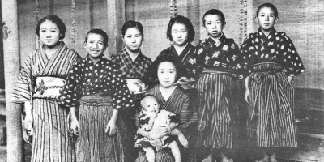

Autor japonês considerado um dos maiores escritores da literatura japonesa do século XX, Dazai Osamu (太宰 治) (19 de junho de 1909 - 13 de junho de 1948), pseudônimo de Shūji Tsushima (津島修治, Tsushima Shūji). Conhecido por seu estilo de escrever tipicamente irônico e pessimista, e por ser um expoente na literatura do estilo Watakushi shosetsu, que se trata de um romance escrito na primeira pessoa do singular, incorporando elementos autobiográficos. Dazai também ficou conhecido por sua obsessão com o suicídio, traço marcante em seus livros e também em sua vida, visto que ele tentou o suicídio por diversas vezes.
Também conhecido por ser alcoólatra, Dazai suicidou-se junto de sua última mulher, Tomie Yamazaki, afogando-se no canal Tamagawa, em um local que ficava próximo de sua casa. Seus corpos não foram descobertos até o dia 19 de junho, o que coincidiu com o seu aniversário de 39 anos. Sua sepultura está no templo Zenrin-ji, em Mitaka, Tokyo.
Dentre suas obras, a mais popular é o romance autobiográfico chamado Ningen Shikkaku, que pode ser traduzida como "Não humano" ou "Desqualificado para ser humano", lançada em 1948 e traduzida para diversos idiomas em todo o mundo. Foi traduzida por Ricardo Machado e publicada pela editora Estação Liberdade no Brasil em fevereiro de 2015, com o título Declínio de um homem.
Sua última obra escrita em vida se chamaria Guddo bai (pronúncia japonesa da palavra inglesa Goodbye, ou "Adeus" em português), mas não foi concluída em decorrência do seu suicídio.
Shūji Tsushima (津島修治, Tsushima Shūji), que mais tarde foi conhecido como Osamu Dazai, era o oitavo filho sobrevivente de um rico proprietário de terras em Kanagi, um canto remoto do Japão na ponta norte de Tōhoku, na prefeitura de Aomori. Na época de seu nascimento, a enorme e recém-concluída mansão Tsushima, onde ele passaria seus primeiros anos, era o lar de cerca de trinta membros da família. A família Tsushima era de origem camponesa obscura, com o bisavô de Dazai acumulando a riqueza da família emprestando dinheiro, e seu filho aumentando ainda mais. Eles rapidamente subiram no poder e, depois de algum tempo, tornaram-se altamente respeitados em toda a região.
pai de Dazai, Gen'emon (um filho mais novo da família Matsuki, que devido à "sua tradição extremamente 'feudal'" não tinha função para outros filhos além do filho mais velho e herdeiro) foi adotado pela família Tsushima para se casar com a filha mais velha, Tane; ele se envolveu na política devido à sua posição como um dos quatro proprietários de terras mais ricos da prefeitura, e foi oferecido como membro da Câmara dos Pares. Isso fez com que o pai de Dazai estivesse ausente durante grande parte de sua infância, e com sua mãe, Tane, doente, Tsushima foi criado principalmente pelos servos da família e sua tia Kiye.
Em 1916, Tsushima começou sua educação na escola primária de Kanagi. Em 4 de março de 1923, o pai de Tsushima, Gen'emon, morreu de câncer de pulmão, e, um mês depois, em abril, Tsushima frequentou o colégio Aomori, seguido por entrar no departamento de literatura da Universidade de Hirosaki em 1927. Ele desenvolveu um interesse pela cultura Edo e começou a estudar gidayū, uma forma de narração cantada usada nos teatros de marionetes. Por volta de 1928, Tsushima editou uma série de publicações estudantis e contribuiu com alguns de seus próprios trabalhos. Ele até publicou uma revista chamada Saibō bungei ("Literatura de célula") com seus amigos e, posteriormente, tornou-se um membro da equipe do jornal da faculdade.
O sucesso de Tsushima na escrita foi interrompido quando seu ídolo, o escritor Ryūnosuke Akutagawa, cometeu suicídio em 1927. Tsushima começou a negligenciar seus estudos e gastou a maior parte de sua mesada em roupas, álcool e prostitutas. Ele também se envolveu com o marxismo, que na época era fortemente reprimido pelo governo. Na noite de 10 de dezembro de 1929, Tsushima cometeu sua primeira tentativa de suicídio, mas sobreviveu e conseguiu se formar no ano seguinte. Em 1930, Tsushima se matriculou no Departamento de Literatura Francesa da Universidade Imperial de Tóquio e imediatamente parou de estudar novamente. Em outubro, ele fugiu com uma gueixa chamada Hatsuyo Oyama (小山初代) e foi formalmente deserdado por sua família.
Nove dias depois de ser expulso da Universidade Imperial de Tóquio, Tsushima tentou suicídio se afogando em uma praia em Kamakura com outra mulher, a anfitriã de bar de 19 anos Shimeko Tanabe (田部シメ子). Shimeko morreu, mas Tsushima sobreviveu, tendo sido resgatado por um barco de pesca. Ele foi acusado como cúmplice na morte dela. Chocada com os acontecimentos, a família de Tsushima interveio para encerrar a investigação policial. Sua mesada foi restabelecida e ele foi liberado de quaisquer acusações. Em dezembro, Tsushima se recuperou em Ikarigaseki e se casou com Hatsuyo lá.
Logo depois, Tsushima foi preso por seu envolvimento com o Partido Comunista Japonês e, ao saber disso, seu irmão mais velho, Bunji, prontamente cortou sua mesada novamente. Tsushima se escondeu, mas Bunji, apesar de seu distanciamento, conseguiu dizer a ele que as acusações seriam retiradas e a mesada restabelecida mais uma vez se ele prometesse solenemente se formar e jurar não ter mais qualquer envolvimento com o partido. Tsushima aceitou a oferta.